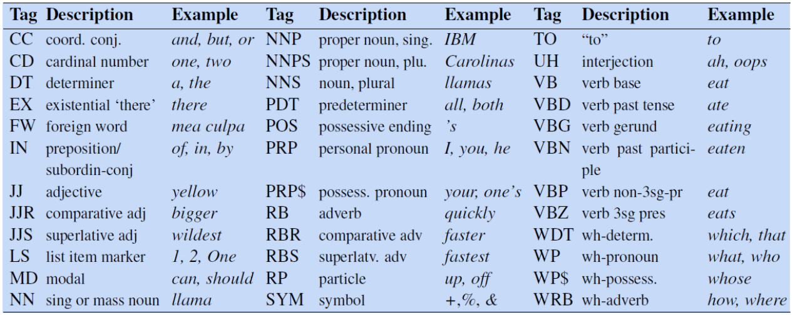

The Little Book of NLP
A brief overview of the content in UoS's COMP3225 Natural Language Processing module.
Note: This book was written for revision purposes and may not be accurate. If there are any inaccuracies suggest an edit!
Generic Concepts
This section covers the concepts that are widely used throughout all areas of NLP
Word Representations
Word representations are methods of creating a numerical representation of a span of text.
Feature Sets
Feature sets are handcrafted lists of features, each represented using a feature vector which are then aggregated (summed, etc.) to create a single vector for the feature set.
Individual features depend on the available information for the task.
For example, common Named Entity Recognition features include:
- Word shapes
- Word features: suffixes, prefixes, capitalisation
- POS tags
- Word lookups (gazetteers)
They are expensive to create as the choice of features are manually chosen. This also makes them difficult to adapt and tune, as it is hard to tell what features are achieving what goals
Embeddings
Vector embeddings are created automatically, learning representations of text based on a set of training data.
Embeddings represent words as a point in a continuous multi-dimensional space
Sparse Embeddings
Sparse embeddings are called as such as many of the entries in the vector will be zero.
There are two methods of creating sparse embeddings
Term Frequency - Inverse Document Frequency (TF-IDF)
TF-IDF uses a term-document matrix, where each cell contains the count of a specific word (rows) in a specific document (columns).
The matrix is weighted by two factors:
- Term frequency: \( \text{TF}(t, d) = \log_{10}(\text{count}(t,d)+1) \)
- Inverse Document Frequency: \( \text{IDF}(t)=\log_{10}(\frac{N}{\text{count}_{docs}(t)}) \)
Which weights each cell by the number of times it appear in the document times the inverse of the number of documents it appears in. Giving the formula for weighting each cell as:
\[ \text{TF-IDF}(t,d)=\text{TF}(t,d) \times \text{IDF}(t) \]
Both factors are used as:
- Term frequency doesn't discriminate
- Inverse document frequency is useless alone, but shows which words are important to certain documents
Positive Pointwise Mutual Information (PPMI)
PPMI uses a term-term matrix, where each cell counts the co-occurrences of a target word (rows) and a context word (columns). Co-occurrences are defined as the number of times the context word appears within a ±N context window around the target word.
PPMI is a measure of how much more two words co-occur than is expected if they were independent.
It is calculated as: \[ \text{PPMI}(w, c) = \text{max}( \log_{2} \frac{P(w, c)}{P(w)P(c)}, 0) \]
Only positive values are used as negative values are unreliable unless the corpus is massive.
The probabilities are calculated: (w, c) is the cell count, (w) is the row count, and (c) is the column count, all divided by the total count
Dense Embeddings
Dense embeddings are much smaller vectors (usually with dimensions in the hundreds), where all values take meaningful real numbers.
Static embeddings learn one fixed embedding for each word.
Word2vec (Skip-gram with negative sampling) is an example algorithm to compute static dense embeddings. In which a self-supervised classifier is trained to classify is two words co-occur, i.e. the context word appears in a ±N window of the target word. The weights are then used as the embeddings for words.
To train the weights:
- The classifier initialises two sets of weights randomly for each word, one for its target representation and the other for its context representation.
- For all words, use the N context words and sample kN random words using weighted unigram frequency (i.e. counts to the power of \(\alpha\), commonly 0.75) to give more weight to rare words
- Adjust the weights to maximise the vector similarity of the context word pairs and minimise the similarity of the negative words
As two embeddings are learnt for each word it is common to either add them together or just use the target word embeddings
Other types of static include:
- fasttext: an extension on word2vec using a sub-word model to better handle unknown words and word sparsity
- GloVe: captures global corpus statistics from ratios of probabilities in a term-term matrix
Contextual embeddings (such as BERT) capture embeddings for each word sense.
Benefits over sparse embeddings
Dense embeddings are better than sparse as:
- They require less weights due to the lower dimensions, which helps with generalisation and avoiding overfitting
- They capture relations between words
Semantic Properties of Dense Embeddings
In word2vec the size of the context window can alter the types of association between vectors:
- Smaller context windows (±2) show first-order co-occurrence (syntagmatic association). Which means the words are typically near each other.
- Larger context windows (±5) show second-order co-occurrence (paradigmatic association). Which means the words share similar neighbours.
Embeddings encode properties such as:
- Relational similarity/meaning: e.g. King - man + women = queen (the parallelogram model)
- Implicit corpus bias
With multiple corpuses (e.g. historical, cultural, document type, ...) analysing the differences in word embeddings can show the change in meaning and associations words may have
Evaluation Metrics
ROUGE
ROUGE is used to evaluate text summarisation.
It evaluates a summary by the proportion on n-grams in the summary that also appear in a reference summary
ROUGE is recall oriented so depended on the quantity of matches not the quality of them.
BLEU
BLEU is used to evaluate machine translations.
It evaluates a generated text against a reference text by comparing the number of n-grams that appear in the generated that also appear in the reference text
BLEU is purely precision based (how much of the translation is good) and ignores recall factors (how much did it translate)
Perplexity
Perplexity is used to evaluate language models, i.e. models which assign a probability distribution for the next word in a sequence.
It measures how good a vocabulary is it predicting a target text. It is computed as the probability of the words in the text appearing in that order, which is then inverted and normalised by the number of words.
Perplexity is given as: \[ Perplexity(w_1...w_N)=\sqrt[N]{\frac{1}{P(w_1w_2...w_N)}} \]
Generalising to a bigram model gives: \[ Perplexity(w_1...w_N)=\sqrt[N]{ \prod_{i=1}^{N} \frac {1} {P(w_i \vert w_{i-1})} } \]
The probability of a sequence of words using the Markov assumption (bigram model) is:
\[ P(w_{1:n}) = P(w_1)P(w_2 \vert w_1) \dots P(w_n \vert w_{n-1}) \]
Where there is a start if sentence marker:
\[ P(w_{1:n}) = P(w_1| \lt s \gt)P(w_2 \vert w_1) \dots P(w_n \vert w_{n-1}) \]
Precision, Recall, and F1
Precision, Recall, and F1 are used to evaluate classification tasks.
Precision is defined as the proportion of predicted items that are actually correct compared to all items predicted to be correct: \[ precision=\frac{TP}{TP+FP} \]
Recall is defined as the proportion of predicted items that are actually correct compared to the actual set of correct items \[ recall=\frac{TP}{TP+FN} \]
There is a trade off between these two metrics so F1 score is used instead, which incorporates both metrics. \[ F1=\frac{2 \times precision \times recall}{precision+recall} \]
To adapt these to multi-class problems there are two methods:
- macro-averaging: compute the performance for each class individually, then average over the classes
- micro-averaging: pool the decisions for each class into a single binary confusion matrix, then compute precision and recall
Cross Entropy Loss
Cross entropy loss (negative log likelihood loss) measures how close an estimated output \(\hat{\ y} \) is to the correct output \( y \). We aim to minimise the negative log probability of the true \( y \) labels in the training data. Cross entropy loss is given as:
\[ L_{CE}(\hat{\ y}, y) = -( y \log \hat{\ y} + (1 - y) \log (1 - \hat{\ y}) )\]
When the classifier is binary, correct output being 0 or 1, the cross entropy loss is just \(\ -\log\hat{\ y} \)
For multi-class output Categorical Cross Entropy Loss is given:
\[ L_{CCE}(\hat{\ y},y) = -[\sum_{i=1}^{N} y_i * log(\hat{y_i})] \]
To find the loss of a sequence of outputs, we average the cross entropy loss over all the output states:
\[ L = \frac{1}{T}\sum^T_{i=1}L_{CCE}(\hat{y_i}, y_i) \]
Vector Similarity
Measuring the similarity of two vectors is an important topic as many NLP applications use vector representations of words, i.e. embeddings
A simple method of measuring how similar two vectors are is the dot product:
\[ v \cdot w = \sum^N_{i=1} v_iw_i \]
However, this is method is biased towards longer vectors. Cosine similarity or the normalised dot product is commonly used instead:
\[ \text{cosine}(\theta) = \frac{a \cdot b}{|a||b|} \]
Where vectors are pre-normalised these metrics are interchangeable.
Classical NLP
This section covers areas of NLP that exist outside of deep neural networks.
N-Grams
A language model is one that assigns a probability to each possible next word in a sequence.
The probability of a sequence of words is the joint probability of each word given all previous words.
\[ P(w_{1:n}) = P(w_1)P(w_2 \vert w_1)P(w_3 \vert w_{1:2})...P(w_n \vert w_{1:n-1}) \]
As there is no way to compute the probability of a word given a long sequence of preceding words, n-grams use a generalised form of the Markov assumption (the current state only depends on the previous, i.e. the bigram) where the current state depends on the previous n-1 states.
For a bigram model:
\[ P(w_{1:n}) = P(w_1)P(w_2 \vert w_1) \dots P(w_n \vert w_{n-1}) \]
Where there is a start if sentence marker:
\[ P(w_{1:n}) = P(w_1| \lt s \gt)P(w_2 \vert w_1) \dots P(w_n \vert w_{n-1}) \]
The probability (maximum likelihood estimation, MLE) for an n-gram is given by the count of the n-gram normalised by the count of the preceding (n-1)-gram:
\[ P(w_n | w_{n-N+1:n-1}) = \frac{C(w_{n-N+1:n-1}w_n)}{C(w_{n-N+1:n-1})} \]
Where \( N \) is the size of the n-gram
To evaluate an n-gram model perplexity is used.
Dealing with Unknown Words
It is possible that words may appear in the test set that where not in the training set.
One method of dealing with this is to enforce a close vocabulary, where all test words need to be known.
However, in most situations language models need to be able to handle unknown words, also known as out of vocabulary (OOV) words. To do this a new pseudo-word token <UNK> is added to the vocabulary, making it an open vocabulary
There are two common ways to create an open vocabulary:
- Choose a fixed vocabulary and replace all words in the training set with the <UNK> that do not appear in the fixed vocabulary
- Replace all words in the training set that have less than a certain frequency or are not in the most frequent X words with <UNK>
This pseudo-word is then estimated like any other word. Unknown words in the test set are then treated as the <UNK> token
Dealing with Sparse Data
Another issue that occurs in n-gram models is the sparsity of n-grams, i.e. known words appearing in a new sequence or context.
Laplace Smoothing
One method of solving this is shifting some of the probability mass from probable words to words that appear less. This is known as Laplace smoothing where \( k \) is added to all all word counts, this is commonly known as add-1 or add-\(k\) smoothing.
\[ P_{\text{Laplace}}(w_n \vert w_{n-N+1:n-1}) = \frac{C(w_{n-N+1:n-1}w_n)+k}{C(w_{n-N+1:n-1})+kV} \]
Note: \( kV \) has been added to the denominator to take into account the extra counts across the whole vocabulary
Backoff and Interpolation
Another method of dealing with sparse n-grams is to take into account the probability of the lower-order n-grams. There are two methods of doing this.
Backoff is one method, which uses the highest-order n-gram that has been seen.
In order for backoff to give a valid probability distribution, a function \( \alpha \) is used to distribute the mass to the lower-order n-grams. This is known as Backoff with discounting or Katz Backoff
Interpolation is another method which mixes the probabilities of the n-gram and its lower-order variations. This is done by adding the probability of each n-gram together, each weighted by some factor \( \lambda_i \). The sum of all weights needs to add to 1 to ensure the probability distribution remains valid.
\[ \hat{P}(w_n | w_{n-2:n-1}) = \lambda_1P(w_n) + \lambda_2P(w_n|w_{n-1}) + \lambda_3P(w_n|w_{n-2:n-1}) \]
It is possible to also compute weights depending on the context sequences.
These weights are trained using a held-out corpus, ensuring it does not overfit to the actual training data.
Other forms of dealing with unknown contexts are:
- Stupid backoff
- Kesner-Ney Smoothing
Text Processing
TBC: Regex, tokenisation, text similarity
Sequence Labelling
Sequence labelling is the task of assigning a label to each element in the input.
Parts of Speech (POS)
POS tagging aims to assign a parts of speech tag to each word in the input which describes its grammatical function, e.g. nouns, determiners. POS tagging is a disambiguation task as one word may have more than one possible meaning, the goal is therefore to find the best sequence of tags for the situation
POS tags can be split into three types of class:
- Open classes: New words are frequently being created or borrowed, such as nouns, verbs, adjectives, adverbs, interjections
- Closed classes: Mostly fixed vocabulary, typically function words used for structuring grammar, e.g. pronouns, adpositions, conjunctions...
- Other: symbols and punctuation
A list of POS labels is known as a Tagset. The most common of these is the Penn Treebank which contains 45 different labels.

A good baseline model is to take the most common POS tag for a word, this has a surprisingly high accuracy of 92%
Hidden Markov Models (HMMs)
A better model is to use a Hidden Markov Model (HMM), where we are trying to find the hidden states (POS tags) based on the observed emissions (words).
HMMs make two assumptions:
- Markov Assumption: The current state only depends on the previous
- Output independence: The output observation (word) only depends on the state that produced it (the POS tag)
HMMs consist of 5 components:
- \( Q \): a set of \( N \) states
- \( A \): a transition probability matrix, representing the probability of moving from one state to another
- \( O \): a sequence of \( T \) observations drawn of the vocabulary
- \( B \): a sequence of observation (emission) probabilities, each representing the probability of an observation being generated at a state
- \( \pi \): the initial probability distribution for the starting state, sums to 1.
To do POS tagging we aim to decode the states of the HMM based on the observations
The most probable sequence of tags, using a bigram model, is defined as:
\[ \hat{t}_{1:n} \]
\[ =\underset{t_{1:n}}{\text{argmax}} \prod^n_{i=1}P(w_i|t_i)P(t_i|t_{i-1}) \]
Where:
- Emission probability \( P(w_i|t_i) \) is given as \( \frac{C(t_i, w_i)}{C(t_i)} \)
- Transition probability \( P(t_i | t_{i-1}) \) is given as \( \frac{C(t_{i-1}, t_i)}{C(t_{i-1})} \)
To calculate the most probable sequence of tags the Viterbi algorithm is used, which is an instance of dynamic programming. Viterbi works by:
- Filling a probability matrix, where each cell \( (t, j) \) represents the probability of that the HMM is in state \( j \) after seeing the first \( t \) observations and passing though the most probable sequence \( q_1, \dots, q_{t-1} \) (i.e. the max of all possible sequences) towards the current state. This is computed recursively, given the previous state through, transmission probability, and emission probability: \( v_t(j) = \max^N_{i=1} v_{t-1}(i)A_{ij}B_j(O_t)) \).
- At each step keep track of the previous state
- When all cells are computed, recursively backtrack using the pointers to find the most likely sequence of states.
Named Entity Recognition (NER)
POS tagging can determine proper nouns, however, we may want to further disambiguate them into types of entities. Named Entities are mostly all proper nouns, such as persons and locations, however may extend to times and dates.
NER is a crucial step towards building semantic relations, extracting events and finding relations between participants.
NERs may span over more than one word, meaning the task is now a span labelling problem rather than a word labelling problem. However, it is still implemented as a word-tag problem through the use of BIO tagging.
BIO tagging prefixes each words NER label with its position in the NER span:
- B: indicates the beginning of an NER span
- I: indicates the inside/end of an NER span
- O: indicates the word is not within an NER span
An extension, BIOES, adds:
- E: indicates the end of a span
- S: indicates a single word NER
Conditional Random Fields (CRFs)
CRFs are used because we want to use Feature sets to represent words, allowing us to deal better with unknown words, which don't work well within HMMs.
HMMs compute the best sequence (argmax Y of P(Y|X)) based on Bayes rule and P(X|Y). In contrast CRF computes the sequence probability directly, by computing log-linear functions over local feature vectors which is aggregated and normalised to produce the global probability for the whole sequence. Weights are also created for each of the features, which are trained using gradient descent.
Linear chain CRFs are decoded using the Viterbi algorithm, like HMMs.
Feature vectors are a common way of embedding words for use in computations.
Grammars
TBC: constituency grammars, CKY parsing, dependency grammars
Neural NLP
This section covers deep neural networks and their applications in NLP.
Recurrent Neural Networks (RNNs)
TBC: RNNs, cross-attention, applications
Transformers
TBC: transformers, self-attention.